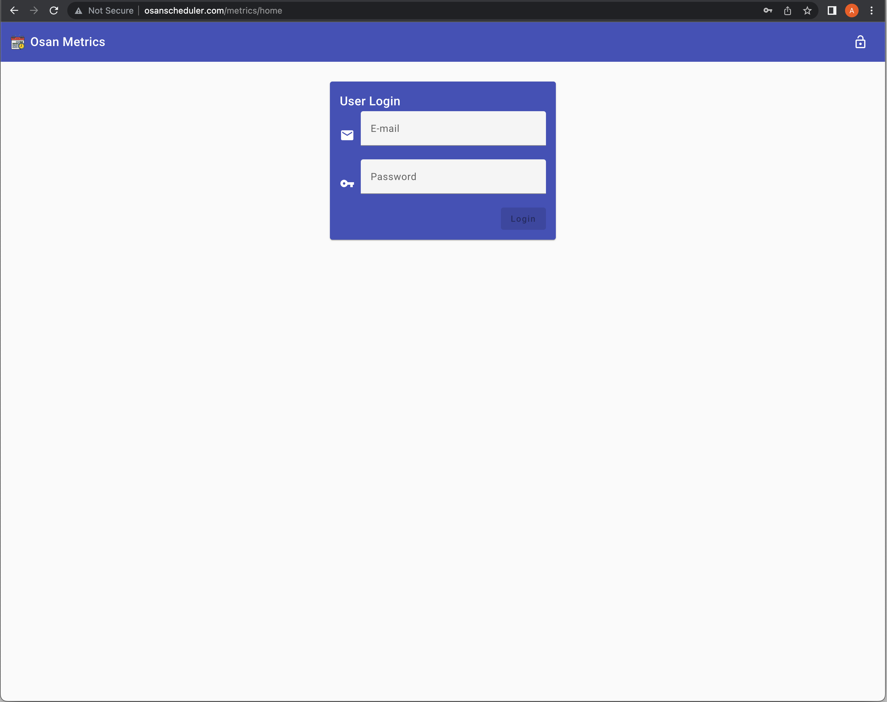

The Login/Home Page

The RTX Osan Metrics web application starts with the LOGIN!
I need to take a little time to point out several features of the Overall
application so that you are aware of features common to all views within the
application.
- The toolbar at the top of all pages provides ready actions. What is
shown in the picture is the way it will look before you log into the
application. It doesn't do much but the lock in the upper-right corner will
bring you to this same place.
-
To log into the application you need to provide your registered email
address and the password, either set for you by your administrator or
yourself. After both are entered into the spaces provided, a button will
appear below this, labeled "Login". You can use either the mouse to
click this button or hit the <Enter> key. If there is a problem,
a short statement will appear next to the button.
Change Profile/Password